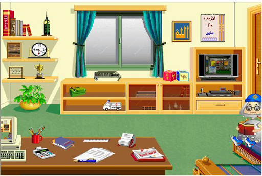
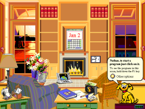

سأنشر هنا جولاتي مع برامج صخر كما قلت في مقالة صخر، بالإضافة إلى مراجع وروابط على الإنترنت لكل ما يتعلق بصخر.
برامج الأسرة و Microsoft Bob

واجهة برامج الأسرة ذكرتني ببرنامج Microsoft Bob من شركة مايكروسوفت.

للبرنامجين الفكرة نفسها: واجهة مبسطة على شكل غرفة بديلة لنظام التشغيل مع تشكيلة برامج منوعة ومرشد إلكتروني.
صدر برنامج بوب سنة 1995، قبل برامج الأسرة. وأظن من المحتمل جدًا أن فكرة برامج الأسرة مأخوذة منه.
الفرق الكبير بين البرنامجين هو أن سمعة بوب سيئة ويعد من أكثر منتجات مايكروسوف فشلًا. أنا لم أستخدم بوب من قبل، لكن بعد المطالعة عنه في الإنترنت تبين لي أن مستوى التفاعلية والتعقيد فيه أكبر بأضعاف مما في برامج الأسرة، وواضح مستوى الجهد المبذول في الإعداد والتسويق من قبل مايكروسوفت (متوقع من شركة عملاقة).
مع كل ذلك البرنامج فشل. ربما لأنه ظهر لكثير من المستخدمين كبرنامج للأطفال فقط و”استغباء” للمستخدمين -مع أن مايكروسوفت سوقته على أنه للجميع- أو بسبب سعره المرتفع أو متطلبات التشغيل العالية. 1 2 3
مع ذلك، أظن أن معظم الأطفال قد أحبوه بالفعل كما أحببنا نحن برامج الأسرة.
معلومة طريفة: مرشد برنامج بوب الافتراضي، الكلب المسمى Rover، عاود الظهور في أداة البحث في ويندوز إكس بي لمن يذكره.
معلومة أطرف: تم تمضين نسخ مشفرة من برنامج بوب في الأقراص المضغوطة لتنصيب ويندوز إكس بي من قبل مطور في مايكروسوف. كان الهدف هو إبطاء محاولات قرصنة النظام وتوزيعه على الإنترنت (30 ميغابايت كانت كفيلة بفعل ذلك في ذلك الوقت)، والتمييز بين النسخ المختلفة للنظام وعدم السماح باستخدام مفاتيح تفعيل مخصصة لنسخ أخرى.
المطور الذي فعل هذا خرج مؤخرًا سنة 2020 بهذا السر. 4 5 6
بوب كان مفيدًا لمايكروسوفت بعد موته أكثر مما كان في حياته على حد قول مطور آخر. 7
برنامج القرآن الكريم
طورت شركة صخر أول برنامج قرآن كريم. ترأس المشروع العالم الفذ نبيل علي، وقد استُخدمت تقنيات معالجة لغوية حديثة فيه. للبرنامج عدة ميزات بالإضافة إلى عرض النص القرآني منها البحث المتقدم المعتمد على الجذور، والبحث حسب الموضوع، وشرح المعاني، وتمرين على تحفيظ القرآن، ومرجع لأسماء لكتب في علوم القرآن، إلخ.
كمية الجهد المبذولة في صنع البرنامج رهيبة، خصوصا إذا أخذنا بعين الاعتبار زمنه.
فيديو استعراضي للبرنامج تم تسجيله في محاكي: https://www.youtube.com/watch?v=Ph0GvA13mfc
روابط خارجية
سأضع هنا روابط حول كل ما يخص صخر مما أجده على الإنترنت.
- ويكيبيديا:
- حاسوب صخر
- شركة صخر
- محمد الشارخ، مؤسس شركة صخر.
- نبيل علي، من العقول الكبيرة خلف صخر.
- مقابلات ومحاضرة على منصة TED لمؤسس شركة صخر محمد الشارخ:
- مقالات منوعة:
- شركة صخر ، كيف كانت و الى أين انتهت ؟! - حسوب
- شركة “ضخر” العربية للبرمجيات … حقيقة تم تحويلُها إلى حُلم - بالعربية
- تعرف على المهندس المصري نبيل علي محمد وإسهاماته في المعالجة الآلية للغة العربية - إم آي تي تكنولوجي ريفيو
- من هو الدكتور نبيل علي الذي تحتفل غوغل بميلاده الـ 82؟ - العربية
- Game Gulf - The Magazine
- ممكن احد يعطينا معلومات عن شركة صخر واين هي اليوم - البوابة الرقمية ADSLGATE
- روابط تحميل:
- برامج الأسرة:
- برامج حاسوب صخر مع محاكي:
- https://www.mediafire.com/file/73r8u8za51wx79b/Complete_Arabic_MSX_%2528Rare_Pack%2529.zip/file
- روابط بديلة لمجموعة برامج منصة MSX عمومًا مع محاكي منفصل:
- محتوى ثري على يوتيوب: كمبيوتر صخر - يوتيوب